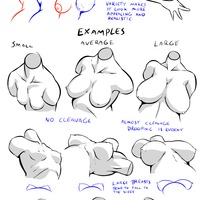
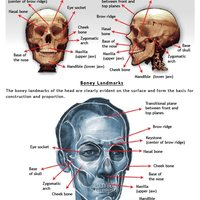
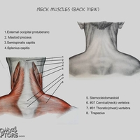

Drawing Resources
This is a repository of drawing resources. I'm beginning with anatomy references. More to come later
select tags:
anatomy
small
portrait
landscape
muscles
torso
head
back
features
facial
blockout
skull
neck
female
medium
tips
photo
body
volume
male
generic
tip
mouth
bones
eyes
large
errors
schema
layer
proportions
biceps
thorax
front
differences
buttocks
construction
hips
scapula
breasts
open
patterns
spine,
external
abdomen
shoulder
axilla
serratus
place
nipple
deltoids
error
finding
ear
nose
ears
loomis
trapezius
profil
statue
reference
fat
neck,
megalarge
pads
tutorial
foreshortening
inside
ribs
obliques
opening
shoulders
rectus
abdominus
move
right
time
where
steps
expressions
men
abdominals
action
perspective
hip
too
stiff
wrong
notes
shoulderneck
joint
line
pectoralis
blockouts
eye
adult
infant
spinalis
with
placement
chin
ribs,
lip
volumes
overhangs
lips
flat
stylized
xray
sacro
3d
shapes
complex
plane
analysis
face
sacrum
ligaments
clavicle
form
side
latissimus
example
gender
deltoid
group



zoom